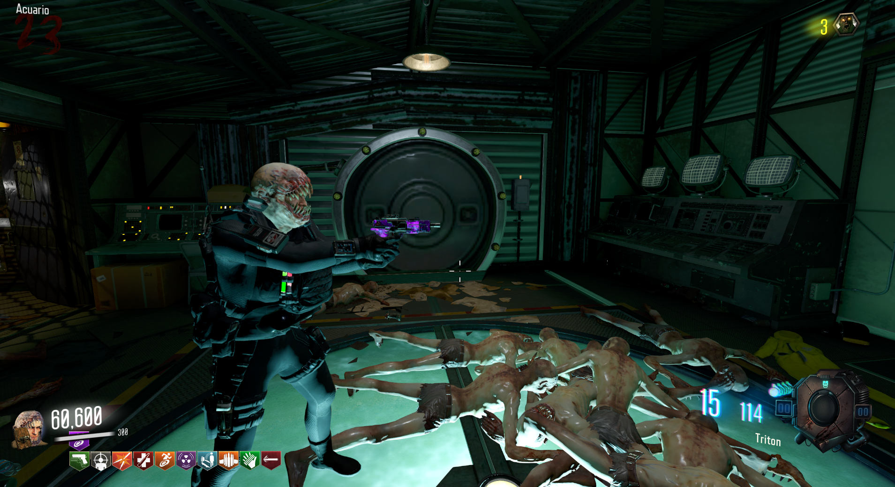
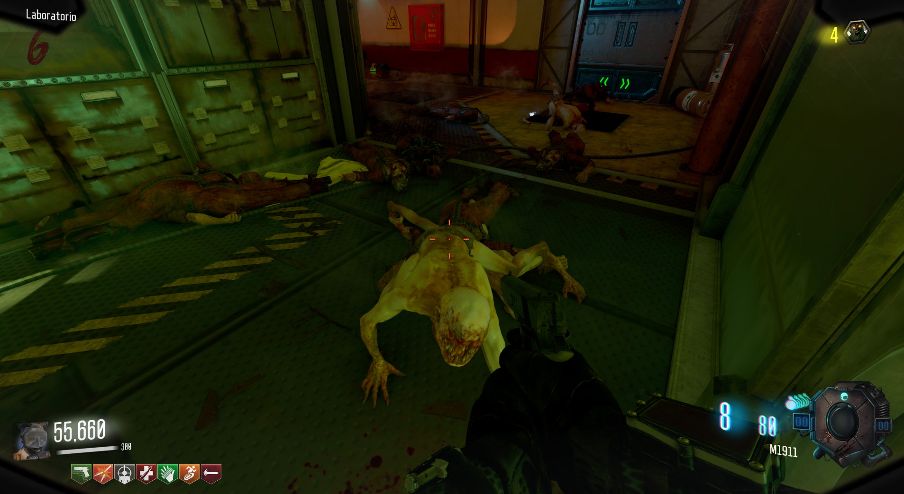
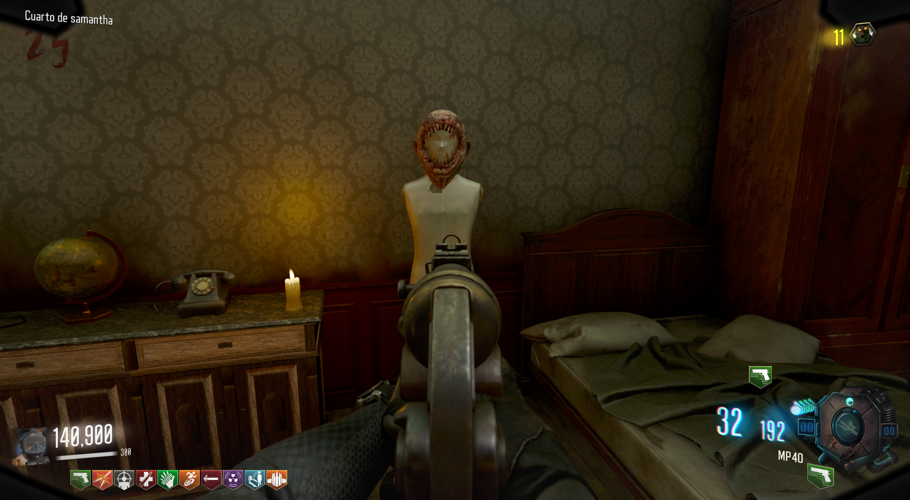

Máscara de Leaper (Leviathan)
Propiedades de la máscara:
Duración de esprintar mejorada.
Capacidad de respirar bajo el agua.
-50% de daño recibido de los leapers.
+33% de daño a los leapers.
Cómo obternerlo:
Debemos de matar a 30 leapers a melee:

Cuando escuchemos el sonido de confirmación podremos ir al portal cerca del Almacén.

En el Cuarto de Samantha encontraremos la máscara.
